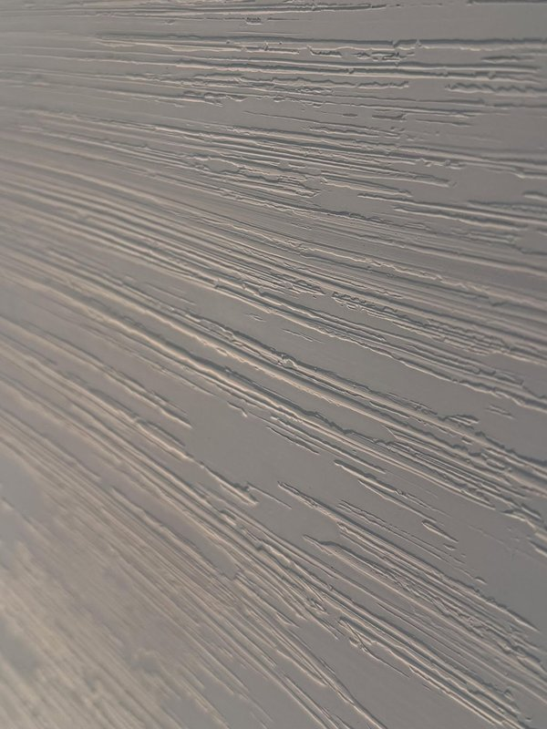
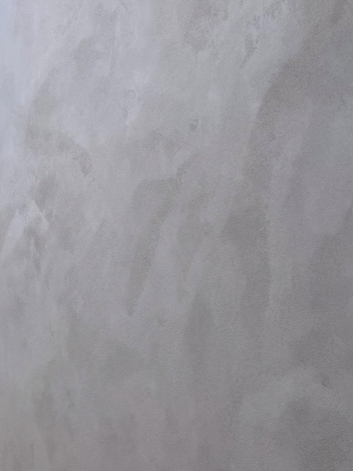
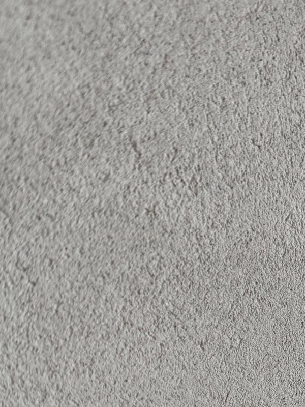
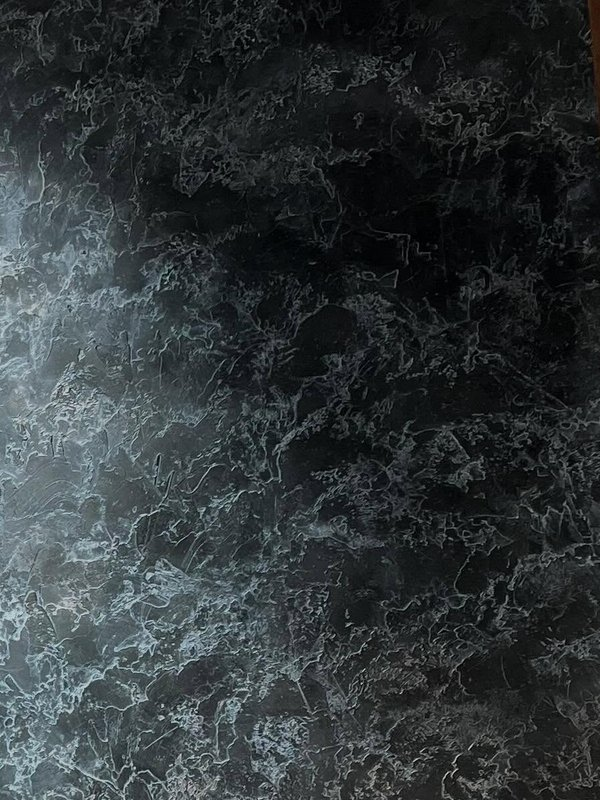
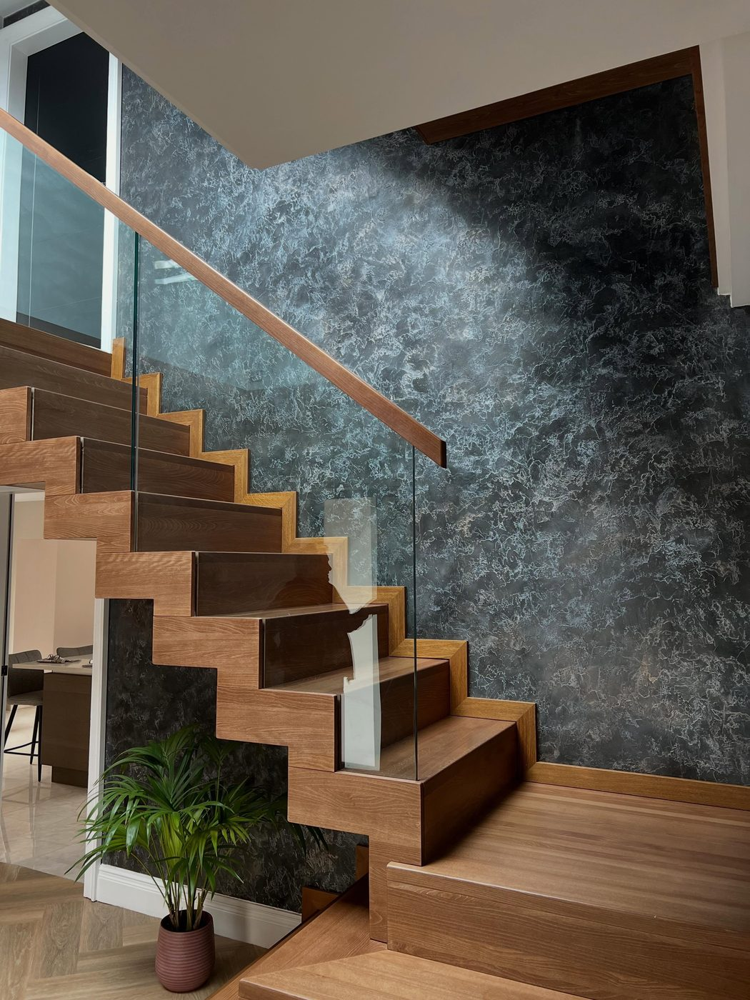
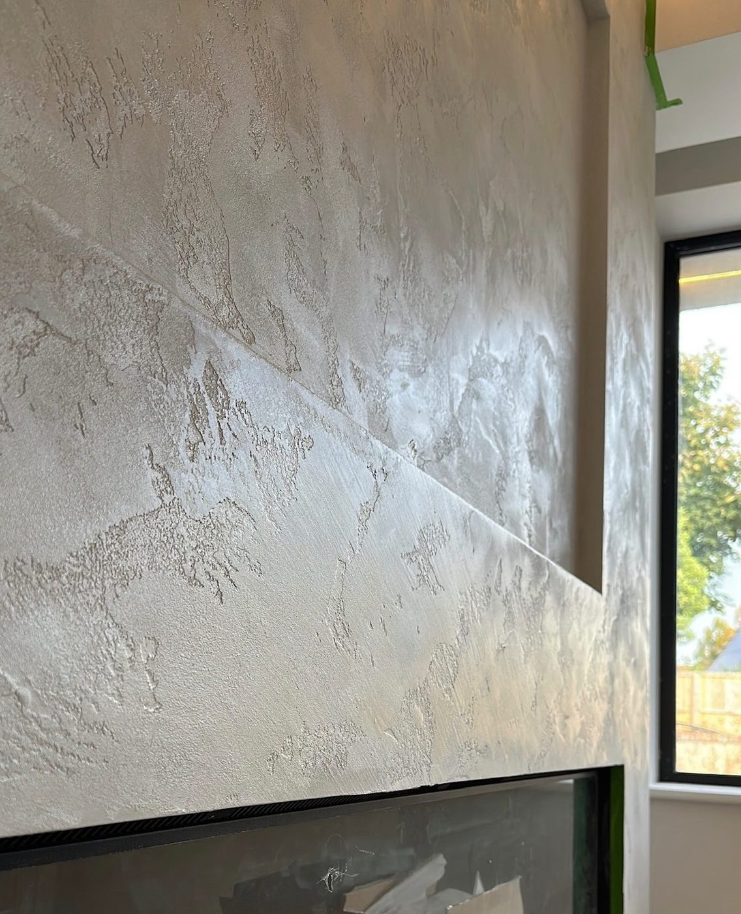
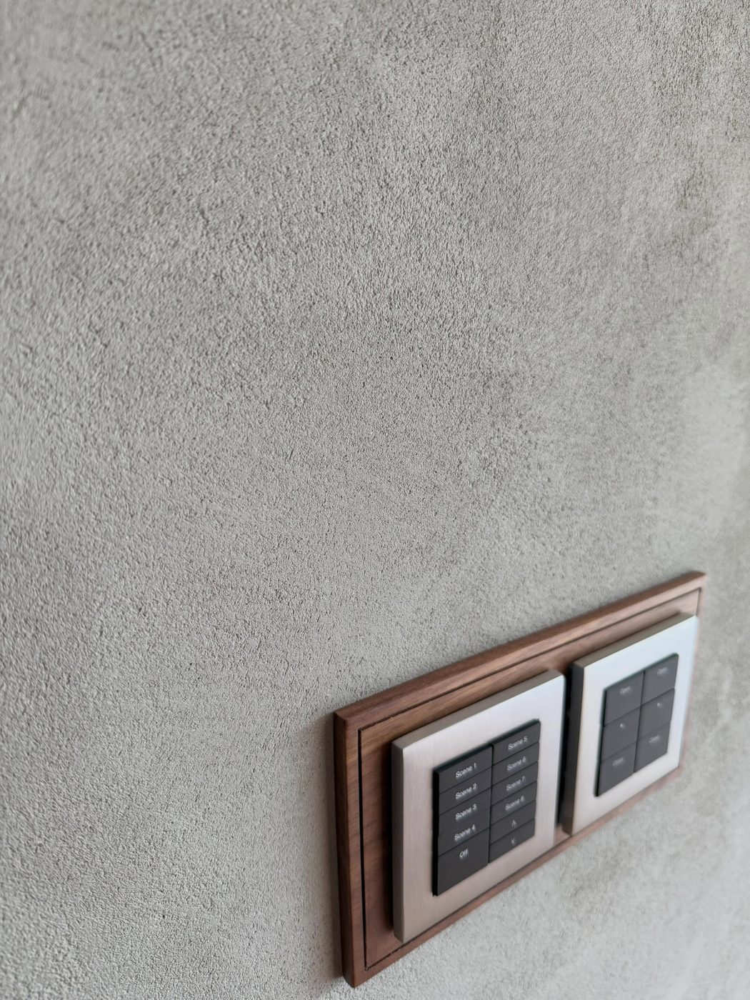
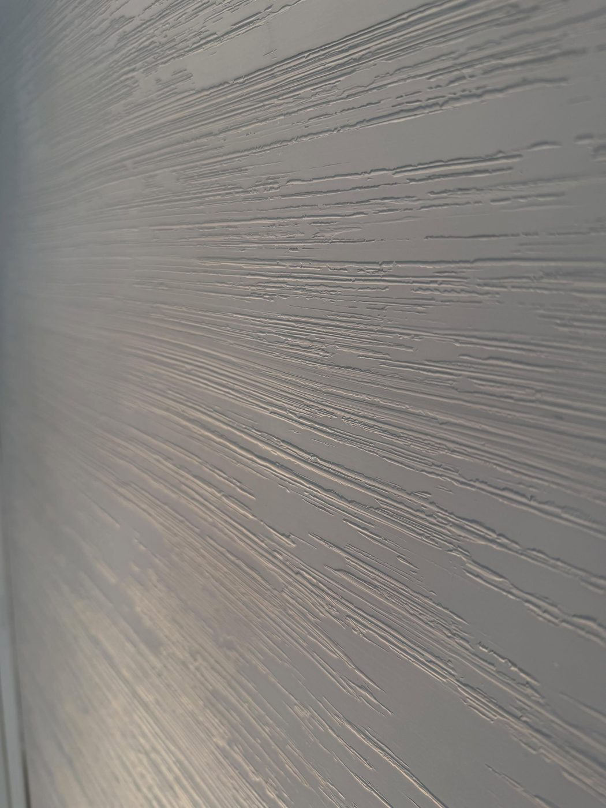
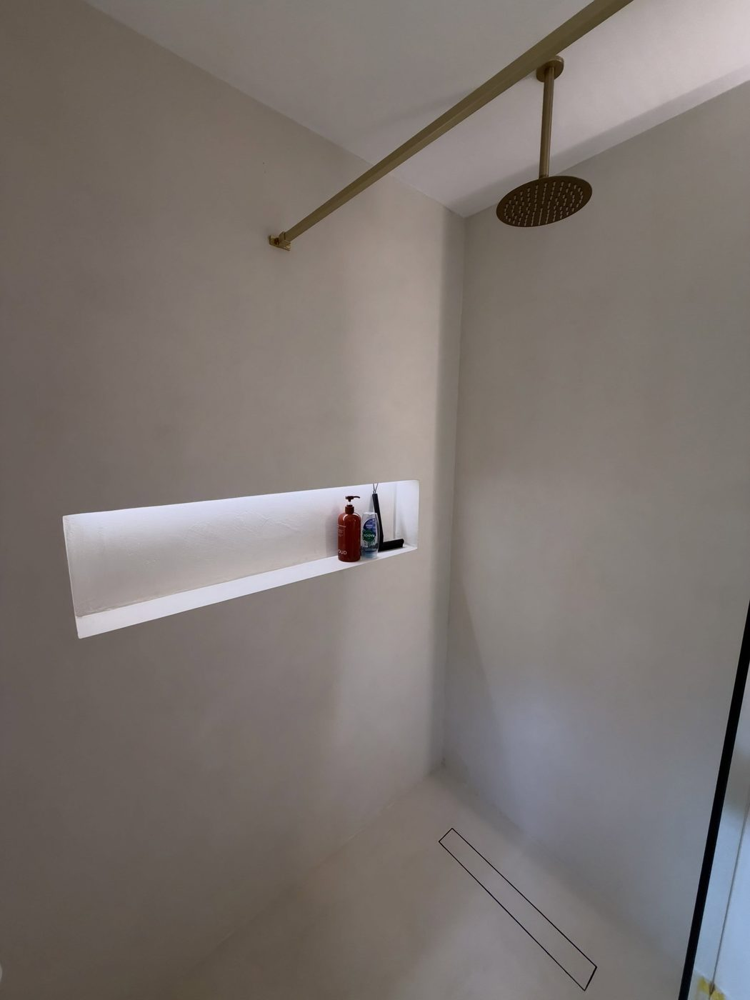
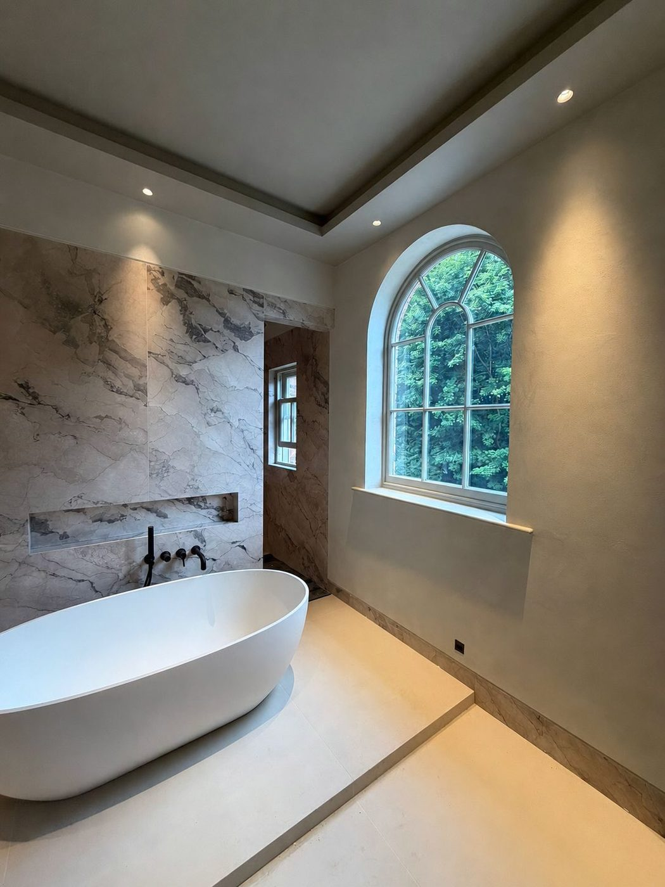

Venetian Plaster · Microcement
The Venetian Company
A team of finishing specialists covering all aspects.
Where it
goes on
Unique and sophisticated designs to suit a variety of homes or commercial spaces — applied by hand, in passes, on site.
And more — if you have a surface in mind that isn't listed, ask.
Plaster or
cement?
They get used interchangeably and they aren't the same thing. Which one suits your room depends mostly on what the surface has to put up with.
Venetian plaster
Lime, marble dust, pigment
Built up in thin coats and burnished back as it cures. The polish comes from the tool, not from a topcoat, which is why the depth appears to sit under the surface rather than on it.
Decorative before it is practical — it belongs where it will be seen and lit.
- Walls and ceilings
- Feature walls, media walls
- Staircases
Microcement
Cement, polymer, fine aggregate
Goes on a few millimetres thick, straight over what is already there — tile, screed, board — so floors rarely need lifting. It cures to one continuous surface with no grout lines to discolour and no joints to crack.
Harder wearing, and happy with water underfoot.
- Floors
- Wet rooms and bathrooms
- Swimming pool areas
The material
is the point
Lime and cement finishes that are laid, burnished and sealed on site. No joins, no seams, no two walls identical.
Working nationwide. The Venetian Company are a team of experienced professionals skilled in luxury Venetian plastering. We have experience creating unique and sophisticated designs to suit a variety of homes or commercial spaces.
We are a friendly, customer-focused business with a passion for bringing your dream home to reality.
Every wall is mixed, laid and finished by hand.
The range
Six surfaces from recent projects. Your finish and colour are agreed with you before anything starts.

Trowelled
Polished
Textured
MarbledPhotographed on site, not on sample boards — this is how each one landed on a real wall.
How a
project runs
Pricing depends on the size of the area and your desired finish or style. Nothing starts until the quote is agreed.
Initial discussion
Send us the space and what you're after. We're also able to visit the area to discuss before going ahead.
Finish, colour, samples
Once your finish, colour and other requirements are agreed, samples can be provided as part of your package — up to two included, additional samples £80.
Quote agreed
Pricing is provided in a quote after those discussions and agreed before we commence. We can also suggest alternative finishes to suit a budget.
Date & deposit
Once a date is mutually agreed, a 50% deposit secures the booking — this lets us buy the materials for your project, and it's non-refundable. The balance is due on completion.
Recent
surfaces
Nine pieces of recent work, two of them film rather than stills — the surface shifts as the light moves across it, which a photograph flattens out.
One take, treads to roof light. It is the same surface the whole way up — no joins, no panels — and the veining moves as the light crosses it.
Film by The Venetian Company






Photography and film by The Venetian Company.
Who we work for
Homes and
commercial
“We have experience creating unique and sophisticated designs to suit a variety of homes or commercial spaces.”
Residential
Full house applications through to a single feature wall. Renovations, extensions and new builds, working alongside your trades or on our own.
Commercial
The same materials and the same process, scaled to the space. We work nationwide, so distance is not the deciding factor. If you are specifying for a project rather than a home, send the drawings and we will price from those.
What clients
say
Three short quotes from recent customers sit here — a line each on the finish, the tidiness of the job and whether we turned up when we said we would.
Client quote to be supplied.
Name, area — project type
Client quote to be supplied.
Name, area — project type
Client quote to be supplied.
Name, area — project type
Placeholder — real reviews needed before this goes live
Send us
four things
Photographs of the area let us price it on size, so the more you send, the closer the first number is.
Address of the project
Where the work is.
Photographs of the area
Wide shots are more useful than close-ups. These are what let us price on size.
Measurements
Rough is fine. Don't hold up the enquiry for them.
Desired finish or style
In your own words, or send the inspiration photos you've been saving.
Send your inspiration photos over — they help our team understand your vision. We're experienced specialists and will guide you to a finish that suits your requirements, and we can visit the area to discuss before anything goes ahead.
Our team are always happy to help with any initial discussions or queries, so please don't hesitate to get in touch.
Enquiries · Adam Knowles
Let's talk
about the finish
07527 180499
Direct
07527 180499
Adam Knowles
Covering the UK, nationwide
@thevenetiancompany_
Tiling — @sktiling